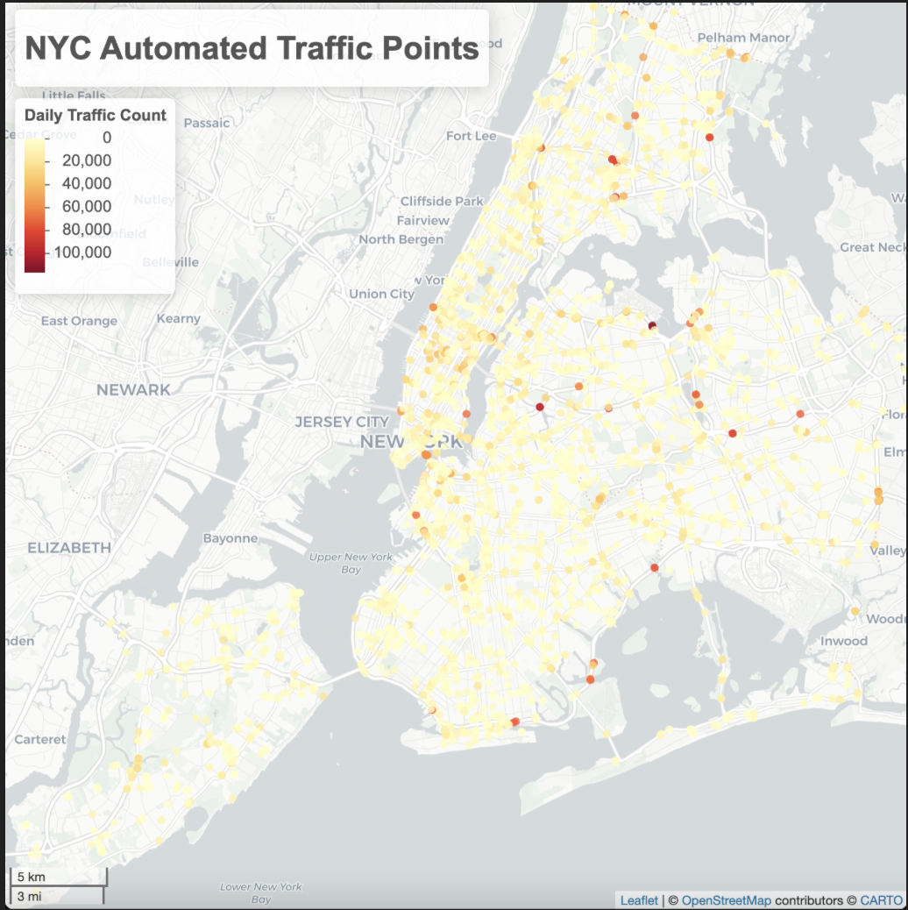
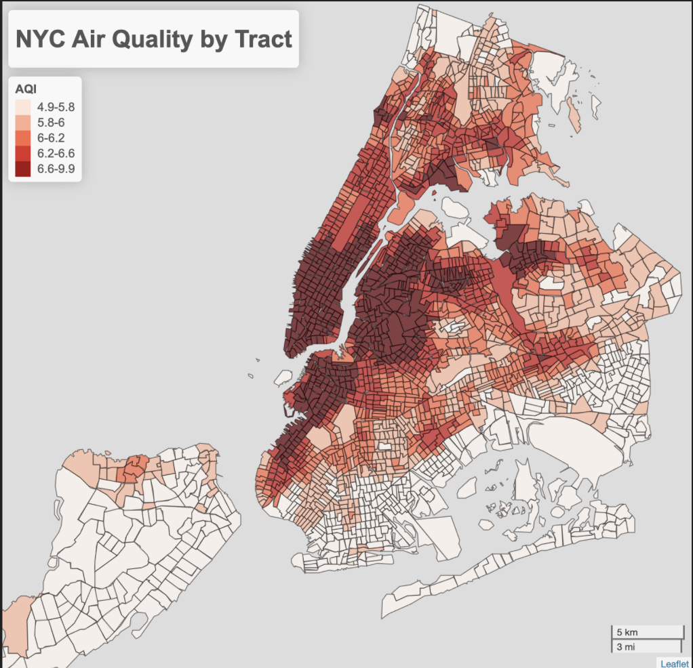
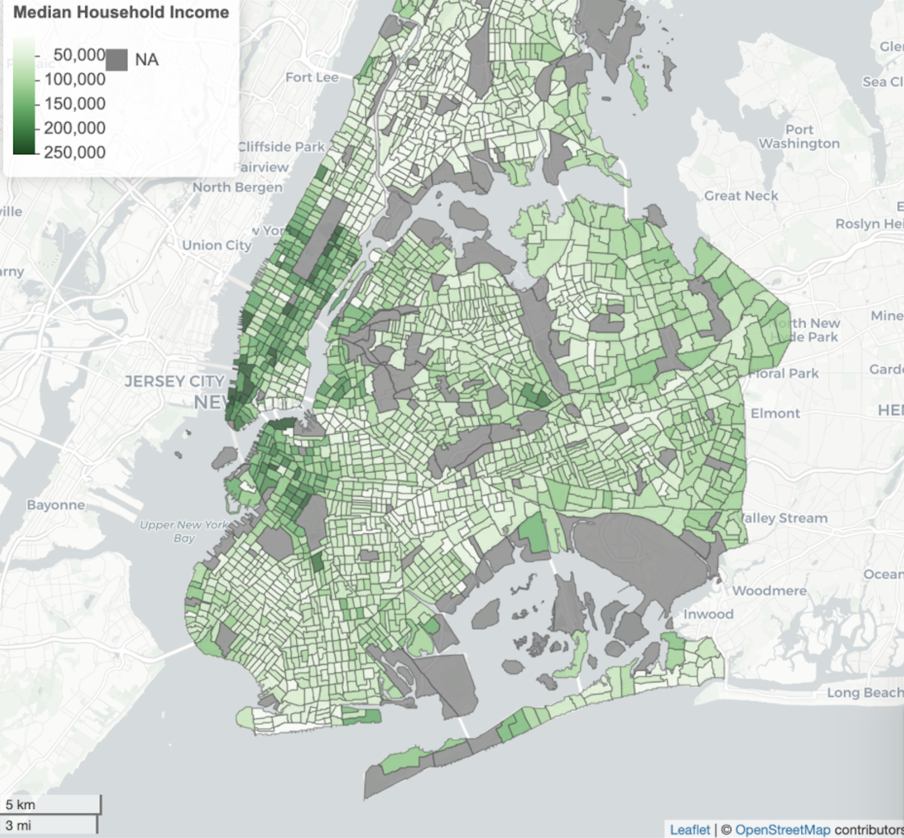

Project Overview
This project aims to analyze traffic patterns in New York City using various data sources, including traffic counts, census data, and air quality information. The analysis provides insights into traffic conditions, limitations of data sets, and the relationship between traffic and demographic factors.
Limitations and Assumptions
- Data does not account for gridlock conditions.
- Missing street data may affect accuracy.
- Interpolating point values to roads introduces some estimation error.
- Data provides only one value per road segment.
Methods
Traffic Data Processing
Traffic data was processed at different levels:
- Raw Point Data: Initial data points collected from traffic sensors. 
- Street Segmented Data: Aggregated data based on road segments.
- Tract Level Data: Further aggregation to census tract level for analysis.


Air Quality Index (AQI) Analysis
Air quality data was compared with traffic patterns to explore potential correlations.
Results
Linear Regression Analysis - AQI
| Variable | Slope | P-Value | R² |
|---|---|---|---|
| Median Household Income | 0.000006 | < 0.0001 | 0.1408 |
| Black or African American Alone | -0.0057 | < 0.0001 | 0.0410 |
| White Alone | 0.0049 | < 0.0001 | 0.0342 |
Linear Regression Analysis - Traffic
| Variable | Slope | P-Value | R² |
|---|---|---|---|
| Median Household Income | 0.1547 | < 0.0001 | 0.0447 |
| White Alone | 150.0995 | < 0.00001 | 0.0140 |
| Black or African American Alone | -145.5858 | < 0.0001 | 0.0114 |
Future Improvements
- Incorporate a larger raw data set for more accurate analysis.
- Interpolate values for roads to improve data representation.
- Normalize data based on the time of year to account for seasonal variations.
Data Sources
- New York City Department of Transportation (NYC DOT). Automated Traffic Counts
- New York City Department of Office of Technology and Innovation (OTI). Roads Data
- New York City Department of Health and Mental Hygiene (DOHMH). Air Quality Data
- National Historical Geographic Information System (NHGIS). 2020 Census Tract